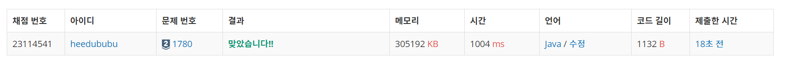

문제
https://www.acmicpc.net/problem/1780
( ᐛ )و 도전
1. 설계
- 분할정복 문제이다.
- 범위를 줄여나가며 범위안에 같은 숫자들로 구성되어 있는지 확인한다.
- https://iamheesoo.github.io/blog/algo-boj1992랑 똑같은 문제
2. 구현 (성공 코드)
1
2
3
4
5
6
7
8
9
10
11
12
13
14
15
16
17
18
19
20
21
22
23
24
25
26
27
28
29
30
31
32
33
34
35
36
37
38
39
40
41
42
43
44
45
46
47
48
49
50
51
52
53
54
55
56
57
58
59
import java.util.*;
import java.io.*;
/**
* @author HEESOO
*
*/
class Main {
static int[][] map;
static int zero, posOne, negOne;
public static void main(String[] args) throws IOException {
BufferedReader br=new BufferedReader(new InputStreamReader(System.in));
int n=Integer.parseInt(br.readLine());
map=new int[n][n]; // 초기화
zero=posOne=negOne=0;
for(int i=0;i<n;i++) { // 맵 생성
String[] input=br.readLine().split(" ");
for(int j=0;j<n;j++) {
map[i][j]=Integer.parseInt(input[j]);
}
}
divide(0,0,n); // 분할
String answer=negOne+"\n"+zero+"\n"+posOne;
System.out.println(answer);
}
public static boolean isAble(int row, int col, int n) {
// map[row][col]을 시작으로 n 사이즈 범위 내에 같은 숫자들로만 구성되어 있는지 체크
int value=map[row][col];
for(int i=row;i<row+n;i++) {
for(int j=col;j<col+n;j++) {
if(map[i][j]!=value) return false;
}
}
return true;
}
public static void divide(int row, int col, int n) {
if(isAble(row, col, n)) { // 같은 수로만 구성되어 있다면
if(map[row][col]==0) zero++;
// 그 숫자에 따라 개수 카운드
else if(map[row][col]==1) posOne++;
else negOne++;
}
else {
int newSize=n/3; // 사이즈는 3의 배수이므로
for(int i=0;i<3;i++) { // 시작점을 다르게 하여 newSize 범위 내에서 다시 체크
for(int j=0;j<3;j++) {
divide(row+newSize*i, col+newSize*j, newSize);
}
}
}
}
}
3. 결과
 성공٩(˘◊˘)۶
4. 설명
-
맵을 생성한다
-
divide()로 정사각형 범위를 만들고, isAble()로 압축 가능한지 체크한다
- 1992 문제와 코드가 거의 같다.
- 다른 점은 divide() else문에서 재귀 호출을 for문으로 했다는 것이다. 1992번 문제에서는 탐색 순서가 정해져 있고, 재귀를 4번만 호출하면 되기 때문에 for문을 사용하지 않고 일일이 코드를 썼는데, 이번 문제는 사이즈가 3의 약수로 줄어들어야 하므로 재귀도 총 9번 호출해야한다. 9개를 다 쓸 수는 없으므로 for문으로 작성하였다.
- 이 문제는 탐색 순서가 중요하지 않고 숫자별 개수만 세면 되므로 i, j를 적절히 써서 각기 다른 시작점을 만들고 9번을 호출하기만 하면 된다.
해결 완료!
참고
- [JAVA/백준] 1992번: 쿼드트리 https://iamheesoo.github.io/blog/algo-boj1992